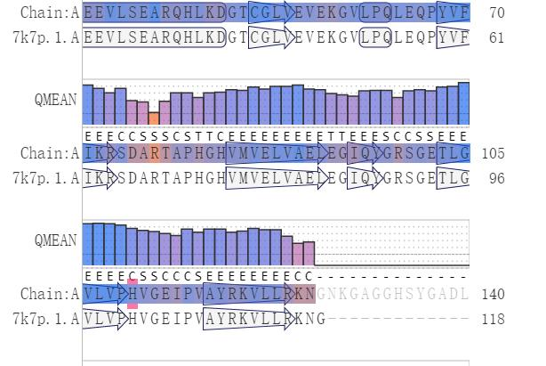

- Team
- Project
- Lab
- Model
- Parts
- Improvement
- Contributions
- Judging

Our game is open to anyone interested in biology games, but children under 14 should be accompanied by a guardian for the experience.
The basic structure of our product is a two-layer box and a culture medium containing E. coli inside. The outer box is opaque and removable, which means that the player can change the inner box, which is made of transparent plexiglas and contains either solid medium or liquid medium, from which the player can choose. The outer box containing solid medium is facilited with a camera inside the bottom, while the outer box containing liquid medium is equipped with a small spectrophotometer. On the top of the inner box are two-tone LED lights and a small cartridge containing 8mL of 75% ethanol. The wavelength and intensity of the light can be adjusted by means of a knob on the outer box, and pressing a button on the outer box controls the cartridge to create an alcohol spray.
During the game, by turning the knob on the outer box, players can choose and vary the wavelength (from 230 to 700nm) and intensity (from 0 to 600 μW/cm2) of light to determine the state and strength of the player's bacteria defense and counterattack. At wavelengths near 460 nm, blue light turns on expression of the antitoxin RelB, lifting growth inhibition; at wavelengths near 535 nm, green light turns on counterattack against player bacteria, and dark or far infrared turns off counterattack.
For solid medium, the territory of enemy bacteria and player bacteria can be directly observed through camera imaging, and the area occupied by each on the medium can be counted for scoring and judging the player's victory; for liquid medium, the fluorescence intensity can be measured for scoring and judging the player's victory.

The lipid accumulation was also measured at 72 hours following dilution. In this time point, the culture had reached the stationary phase, and LDs were clearly detectable with Nile red staining for all tested strains, including the wild-type (Fig 2B). Lipid accumulation is known to increase in S. cerevisiae cells upon nutrient depletion (Werner-Washburne et al., 1993), and our results reveal that the difference between wild-type and TAG lipase deletion strains is considerably reduced in the stationary phase cells (Fig 2B). In the 72-hour time point, we did not observe a statistically significant difference between wild-type and the single tgl4Δ or double tgl3Δ tgl4Δ deletion cells. Single deletion of TGL3, which had the largest effect in the 24-hour time point, also led to increased LD staining intensity at 72 hours. We observed the highest intracellular lipid levels with the triple tgl3Δ tgl4Δ tgl5Δ deletion strain, and interestingly, in this time point, the zwf1Δ strain had considerably lower LD staining, comparable to the level of the wild-type strain (Fig 2B). Although the lipid levels of zwf1Δ strain were not lower in the 24-hour time point, ZWF1 deletion could be expected to result in decreased lipid synthesis, as Zwf1 is required to regenerate NADPH, a critical cofactor in fatty acid synthesis. Taken together, by preventing TAG degradation with triple deletion of TAG lipases, we have achieved a considerable increase in lipid production compared to the wild-type strain.
The culture medium is sealed in a double-layer box, so the player will not have direct contact with the bacteria. When the game is over, the alcohol spray on the inner box can be turned on via a button on the outer box to kill the E. coli bacteria in the culture medium. When purchasing the product, the player is required to sign an agreement that they will not actively destroy the box causing environmental pollution or health hazards，and recycle them according to bio-waste.
We are not sure that the players can fully understand the principles of this game. More importantly, the biosafety concerning it is still to be further ensured, including the potential environmental pollution and health hazards.